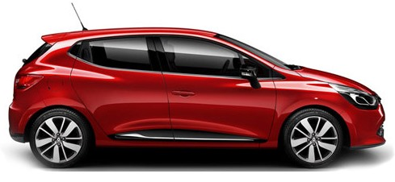
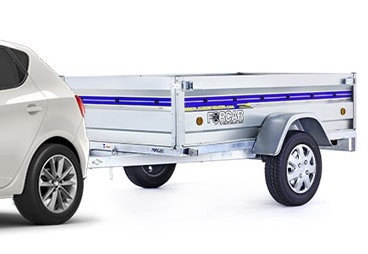
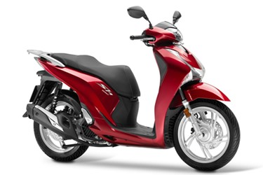
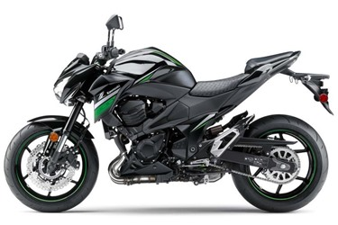
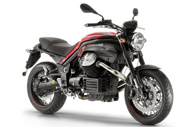
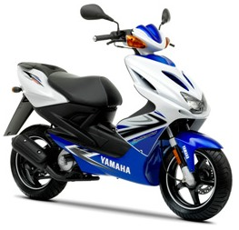
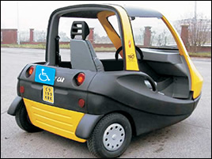
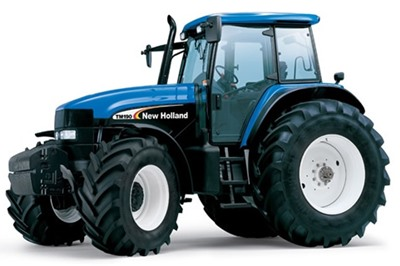
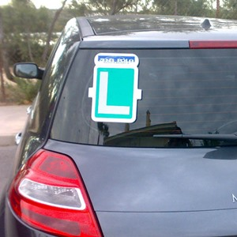
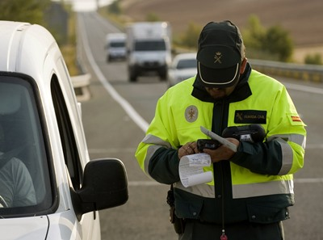

Authorize the driving of different types of vehicles.
1. 2-wheeled and 3-wheeled mopeds, light quadricycles.
2. Automobiles up to 3500kg and 9 seats including the driver: Passenger cars, SUV, tricycles, quadricycles, lorries/trucks and motorhomes.
3. Special vehicles: Agricultural (any weight) and construction or services:

4. Vehicles with trailer:

5. Motorcycles only up to 125cc if you have had Category B Driving Licence for more than 3 years. Only in national territory.
| Category A1 | Category A2 | Category A |
 |
 |
 |
|
|
|
Minimum age 15 years old (other countries have a minimum age of 16 years old).
Authorizes driving 2- or 3-wheel mopeds and light quadricycles.
May pull a trailer or semi-trailer where its maximum authorized mass does not exceed 50% of the unladen weight of the tractor unit.

LCM Licence: Authorization to drive vehicles for people with reduced mobility. Can be obtained beginning at age 14, but to carry a passenger you must be 16. It is co-validated upon obtaining Category A1 or B Driving Licence.

LVA Licence: Authorization to drive special self-propelled agricultural vehicles or their attachments. For example, a tractor with trailer. The mass of the latter must not exceed 3500 kg, there must be less than five passengers including the driver and it must not exceed 45km/h. As in the previous case, it is automatically co-validated upon obtaining B Driving Licence.


Each driver will only be considered novice in the first year of obtaining their first licence.
Newly licenced drivers:
During the 2 years after obtaining the first licence, you must respect the novice drivers’ alcohol limits: Breath 0.15 mg/L or blood 0.3 g/L.
Driver’s licences are renewed:
An expired driver’s licence does not authorize the holder to drive.
8 points
4 points
You must carry: national identity document, current driver’s licence, technical inspection card (MOT), the registration certificate and optionally the proof of insurance.
If towing a trailer or semitrailer (in addition to the above), you must carry its registration certificate and the technical inspection card.
Photocopies are valid provided they are collated (checked and sealed) by the directorate of traffic.
You must notify the directorate of traffic within 15 days if you change your address, and within 10 days if you sell a vehicle (indicating who the buyer is).
Mandatory for automobiles and trailers over 750kg.
Contains the following information:
To know when you will have to pass the first ITV/MOT, look at the date of registration. The next inspection will be noted on the MOT card.
Mandatory for automobiles, trailers and mopeds.
Includes technical details of the vehicle: laden weight, tare, MAM, width, etc.
The date of the next ITV/MOT is noted on it. The date of the first inspection should be consulted on the registration certificate (logical as you do not yet have the ITV/MOT card).
It also lets you know if the vehicle can tow a trailer.
When undergoing the ITV/MOT, there are three possible results:
Age of a passenger car = the first registration of the vehicle
Frequency of inspections
| EXEMPT (does not have to be inspected) |
BIENNIAL (every 2 years) |
ANNUAL (every year) |
SEMIANNUAL (every 6 months) |
|
| Passenger cars | First 4 years | From 4 to 10 years | More than 10 years | |
| Motorcycles, tricycles and quadricycles | First 4 years | More than 4 years | ||
| Trucks and mixed vehicles | First 2 years | From 2 to 6 years | From 6 to 10 years | More than 10 years |
| 2-wheeled mopeds | First 3 years | More than 3 years |
Driving without insurance is subject to fines, immobilization and impounding.
Mandatory for automobiles and mopeds. Trailers only if their MAM is over 750kg.
The insurance covers bodily injuries and damage:
| Summary table of compulsory insurance coverage for the at-fault driver | |||
| DAMAGES | DRIVER | POLICYHOLDER | OTHER people |
| BODILY INJURY | NO | YES | YES |
| PROPERTY | NO | NO | YES |
Compulsory insurance does not cover in case of theft.

A driver is responsible for infractions violating traffic rules.
The owner will be responsible for infractions violating vehicle maintenance (ITV/MOT, insurance).
The penalty for not wearing a seatbelt is for the person not wearing it.
The penalties for not wearing a helmet are for the driver.